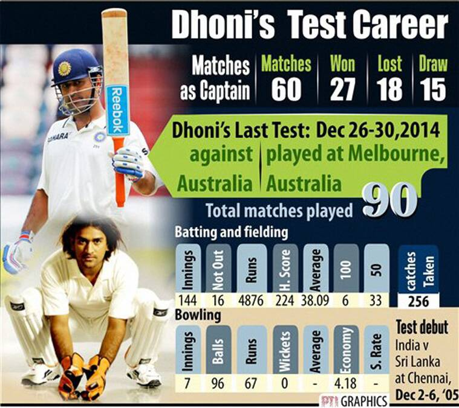
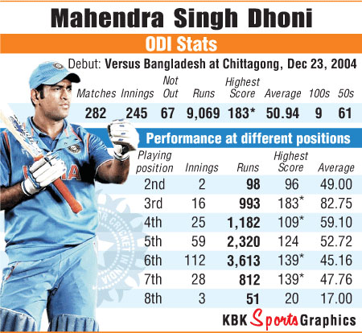
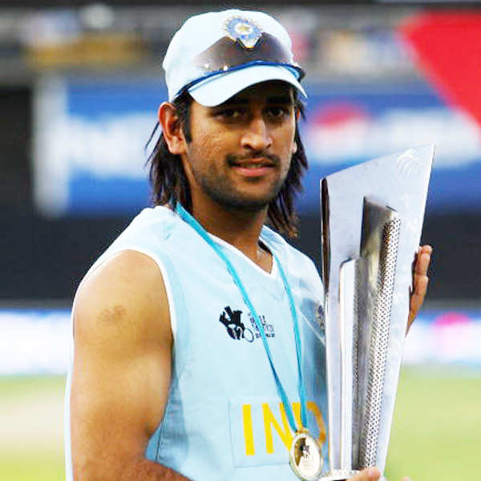

- Most career Runs at No.6
- Highest Individual Score by a wicketkeeper batsman in ODIs
- Only Captain to whitewash Australia in Australia in 140 years
- Fastest to reach No.1 of ICC ODI Rankings
- Most Sixes in ODI as a Captain
- Most ODI Games finished with a Six
- Most Expensive Bat
- Only player to win the World cup with a six
- Most Times Bowled while playing as a WK
- Most Not-Outs
- Most centuries at NO.7 in ODIs
- Most Stumpings in International Cricket
- Most successful Indian wicketkeeper
- First Player to pass 10000 ODI runs with 50+ average
- Most T20 International wins as Captain
- Most successful IPL captain
- First Captain to take India at NO.1 in Tests
- Most matches as captain
- Most Successful Indian captain in all three faormats
- Only Captain to win all ICC Trophies


